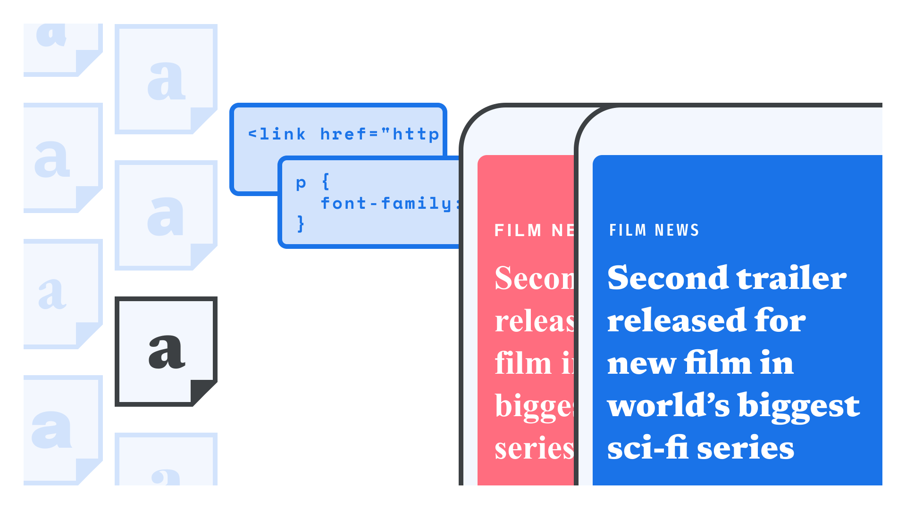

Type Darkroom gathers articles on the evolving nature of typography in the digital era, where form blends with process and interface.
Letters behave, respond, and adapt; they exist not as final objects but as ongoing negotiations between technology, design intention, and user interaction. This collection brings together three texts that rethink type as a living system—always in flux, always contingent, and continually shaped by the environments that produce it.
